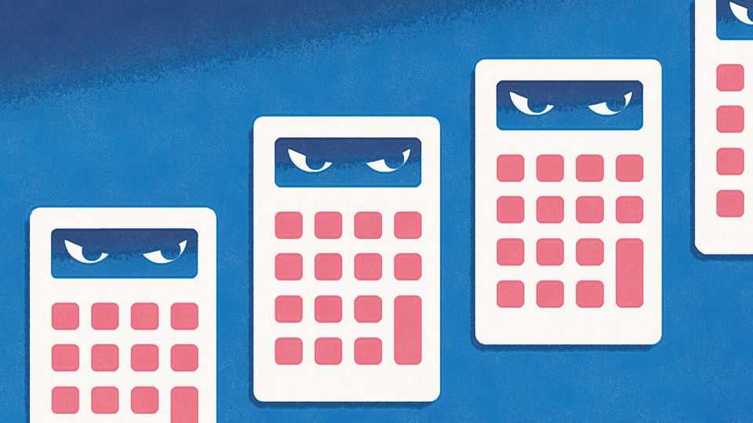
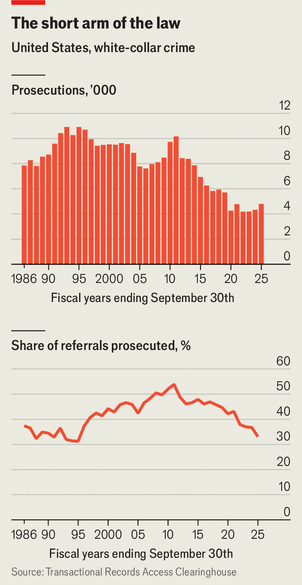

There’s never been a better time to commit financial fraud
American enforcement has collapsed and conditions are ripe for skulduggery

Jul 30th 2026
In 1955 the economist John Kenneth Galbraith wrote of the “inventory of undiscovered embezzlement” that tends to grow during periods of market euphoria. The “bezzle”, as Galbraith called it, is exposed when the good times end and “commercial morality is enormously improved”.
Past bubbles and crashes have indeed led to a bumper crop of white-collar prosecutions (think Enron and WorldCom after the dotcom boom). If Galbraith was right, today’s frothy valuations suggest bezzlers may be lurking in the shadows. But what if their mischief is never discovered? That is the grand experiment on which America has lately embarked.

In the six months to the end of March federal prosecutors brought 2,008 white-collar crime cases, putting them on course for a little over 4,000 by the end of the government’s fiscal year in September, according to figures from the Transactional Records Access Clearinghouse (TRAC), a data repository. That would be a drop of a sixth from five years ago and half from 20 years ago (see chart). It is tempting to lay such figures at the feet of Donald Trump, whose dismantling of the Department of Justice has not helped. But the decline precedes him—and may continue well after.
Aside from a brief spike after the financial crisis of 2007-09, white-collar prosecutions in America have trended down for nearly three decades. There is little reason to believe the country’s financiers and executives have become more virtuous during that time. Instead, the answer lies in a shift in focus towards prosecuting other criminal activity. After the September 11th attacks bevies of federal investigators and lawyers moved into counter-terrorism work, notes a 2021 paper by economist Trung Nguyen, then of Harvard Business School. More recently immigration and drug enforcement have taken priority in voters’ and politicians’ minds.
Even a small budget cut can have a big impact on white-collar-crime prosecutions. Financial frauds often require dozens of lawyers to work for years on a single investigation, notes Sam Buell, a former federal prosector now at Duke University. A study by TRAC found that white-collar referrals in the 12 months to September 2022 that resulted in charges took federal prosecutors 452 days on average to review, more than three-and-a-half times the average for all case types.
Even amid the long-term decline, the drop in enforcement during the Trump administrations has been eyebrow-raising. Ten years ago nearly half of white-collar-crime referrals to federal prosecutors resulted in a case; that figure fell to a third in 2025. Contrast that with immigration prosecutions, for which nearly all referrals still lead to charges.
The number of lawyers in the Department of Justice has shrunk by a fifth under Mr Trump, with many of the remaining bunch reassigned away from crypto or tax inquiries to immigration. The government has also slashed headcount at the investigative and regulatory agencies on which prosecutors rely for tips. Experienced investigators at the FBI or the US Postal Service—a surprisingly significant source of referrals—used to stay for much of their career. No longer.
Civil enforcement has also waned. Take audit checks, an unsexy-yet-vital corner of the regulatory world built up after the collapse of Enron, a fraudulent energy company, in 2001. The Securities and Exchange Commission in 2025 brought a mere ten enforcement actions against accountants and auditors, one fifth of the annual average in the preceding eight years, according to Cornerstone Research, a consultancy. At the same time, the commission has slashed staff pay at the main audit oversight board, which for years offered high salaries to lure expert accountants. It has also suggested it might shift from sniffing out errors in individual audits towards examining the processes followed by the auditors. Officials say the new approach is more efficient. But it may make balance-sheet shenanigans easier to hide.
All this will come at a cost. A paper from 2023 by Alexander Dyck of the University of Toronto and his co-authors suggests only about a third of corporate frauds are ever detected, let alone prosecuted. Extrapolating from the cost of detected frauds, they estimate that actual hijinks destroy some 1.6% of shareholder value in America each year, a figure that would have amounted to $1.1trn in 2025. “Losses to America from white-collar crime dwarf every other crime category,” notes Julie O’Sullivan of Georgetown University, another former prosecutor.
Even if a future administration reprioritises rooting out white-collar crime, it will be hard to pin down today’s fraudsters. Many white-collar crimes carry a five-year statute of limitations, points out Daniel Richman of Columbia University, a criminal-law expert. America’s bezzlers are rejoicing. Everyone else should worry. ■